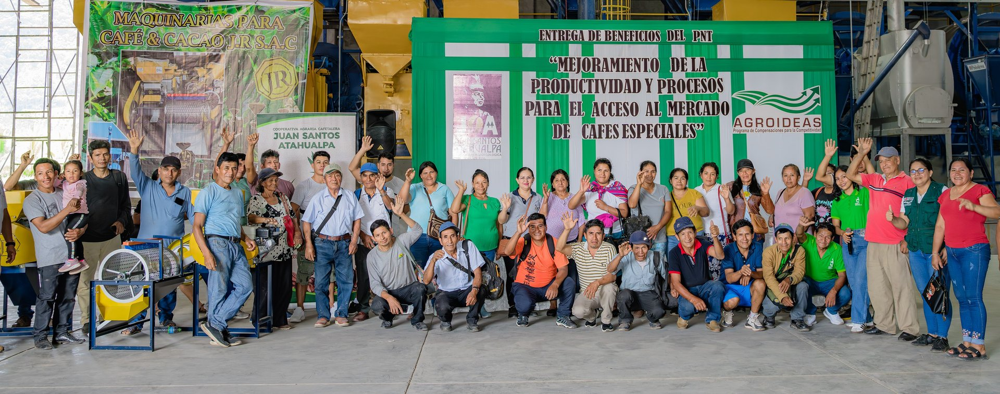

Tecnología en Cada Etapa
Adoptamos las mejores tecnologías disponibles para maximizar calidad, eficiencia y sostenibilidad en toda la cadena.
Drones Multiespectrales
Vuelos con Mavic 3 multiespectral sobre fincas de socios. Planificación fotogramétrica, delimitación de parcelas y cobertura de más de 670 productores.
Parcelas 3D & Ortomosaicos
Procesamiento fotogramétrico para generar nubes de puntos 3D, ortomosaicos georreferenciados y shapefiles de polígonos exportables.

Cumplimiento EUDR
Verificación certificada por Enveritas. Debida Diligencia lista para compradores europeos (CAFEA, BioSuisse). Reglamento UE 2023/1115.
Plataforma Digital
Expediente técnico digital por productor. Digitalización de procesos operativos e integración con plataformas institucionales para trazabilidad completa.
Evaluación de Deforestación
Cruce de polígonos con capas Geobosques y Hansen/GFW. Identificación de alertas de deforestación y generación de mapas temáticos de riesgo.

Proyectos de Carbono
Exploramos la generación de créditos de carbono aprovechando nuestros sistemas agroforestales y la cobertura boscosa verificada de las fincas de socios.
De la Parcela al Mapa
8 pasos que transforman cada finca en un expediente geoespacial preciso, listo para cumplir con la EUDR y detectar deforestación.
Dron Multiespectral
Mavic 3 posicionado en campo. Verificación de condiciones de vuelo y calibración del sensor.
Delimitación de Parcela
Marcación de los límites exactos del área de cultivo. GPS de respaldo para parcelas <4 ha.
Planificación del Vuelo
Trayecto automatizado con solapamiento óptimo para cobertura total del polígono.
Procesamiento Fotogramétrico
PIX4D procesa las imágenes capturadas. Core i9 para reconstrucción densa en menor tiempo.
Nube de Puntos 3D
Reconstrucción tridimensional densa de la parcela. Generación del modelo digital de superficie.
Ortomosaico Georreferenciado
Imagen aérea de alta resolución con coordenadas exactas. Base para análisis NDVI próximos.
Detección de Deforestación
Cruce con Geobosques y Hansen/GFW. Identificación de alertas y clasificación de riesgo.
Mapa Final Temático
Entrega del mapa oficial por socio. Shapefile listo para la Declaración de Debida Diligencia.
Trazabilidad con Código QR
Cada saco tiene un código QR único. El importador escanea y accede al historial completo del lote.
Registro en Finca
Productor, fecha, parcela GPS y altitud registrados en cosecha
Centro de Acopio
Peso, humedad y control inicial de calidad al ingreso
Beneficio
Proceso aplicado, fechas y condiciones de secado registradas
Laboratorio
Puntaje SCA, notas de cata y perfil de taza certificado
Exportación
Número de contenedor, certificados de origen y destino final
I+D Colaborativo
Trabajamos con universidades e institutos de investigación para seguir elevando la calidad del café peruano y adaptar nuestras prácticas al cambio climático.

Agenda una Visita
Recibimos a importadores, periodistas y académicos. Conoce nuestras fincas, el laboratorio de catación y el sistema de trazabilidad en persona.
Coordinar visita